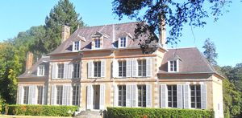
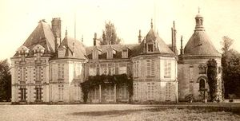
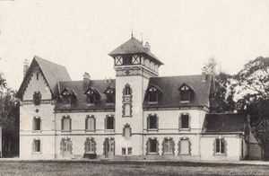

Recensement Jean-Claude Truffet
| Département | 28 — Eure-et-Loir |
| Canton | Brou |
| Commune | Arrou |
| Type d'édifice | Château |
| Période d'origine | XII-XV-XIX |
| Coordonnées GPS | 48° 06' 09" Nord, 1° 02' 42" Est Brunetière grav-2 GPS : 48° 05' 58" Nord, 1° 08' 10" Est. Bois-Méan grav-3 gps 48° 08' 41? N, 1° 06' 51? Est |



BOIS-RUFFIN, du haut de ses 19 mètres, la forteresse médiévale de Bois-Ruffin témoigne du rôle essentiel qu'elle joua dans le conflit opposant Philippe Auguste, Roi de France, aux Plantagenêts. En 1421, la tour est occupée par les Bourguignons et les Anglais. Le maréchal de Boucicault, avec les troupes rassemblées à Châteaudun, marcha sur Bois Ruffin et emporta la place.
BOIS-RUFFIN, la tour se dresse au fond d'une excavation en entonnoir, paraît avoir été construite à la fin du XIIe siècle. Elle est bâtie en grison et gros silex. Elle était autrefois divisée en deux étages, avec entrée au niveau du premier étage. Le remblai résultant du creusement de l'entonnoir a constitué une terrasse circulaire dominant un fossé. Au sommet de ce talus, apparaissent les restes d'un mur, qui rejoignent les ruines d'un ouvrage avancé, commandant le pont-levis disparu. Des fossés moins larges encerclent la tour et se prolongent, du côté nord, pour englober un espace réservé autrefois à des corps de logis, à des granges et à une petite chapelle construite en bois et transformée en maison d'habitation. Le fossé, situé en avant, était traversé par un pont-levis qui menait à un pavillon de défense avec une porte comportant une herse. La Tour du château du Bois-Ruffin est classée aux M.H. depuis 1924. BRUNETIERE, est un château bâti à Arrou. La construction du château d la Brunetière s'est achevée au XIXe siècle, et possède un beau parc. Il est proposé au Public une visite des extérieurs du château, uniquement.
Le maréchal de Boucicault
"
Bois-Ruffin grav 1 GPS : 48° 06' 09" Nord, 1° 02' 42" Est Brunetière grav-2 GPS : 48° 05' 58" Nord, 1° 08' 10" Est. Bois-Méan grav-3 gps 48° 08' 41? N, 1° 06' 51? Est